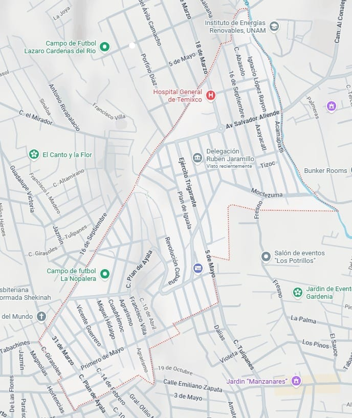

Conoce la estructura comunitaria, división por barrios y la extensión territorial que conforman la Colonia Rubén Jaramillo.
La Delegación Rubén Jaramillo, ubicada en el municipio de Temixco, cuenta oficialmente con ocho barrios en su demarcación interna. La Colonia Rubén Jaramillo abarca una superficie estimada entre 68 y 85 hectáreas, originada a partir del predio fundacional tomado en 1973 que con el tiempo consolidó su trazo urbano actual.
Está dividida internamente en 8 barrios tradicionales.
Zonas identificadas por la comunidad:Eje principal: La avenida Salvador Allende funciona como la vía principal que organiza el comercio y la movilidad.
Colindancias cercanas:
La Delegación Rubén Jaramillo mantiene un compromiso permanente con el desarrollo, la atención ciudadana y el bienestar de todas las familias.